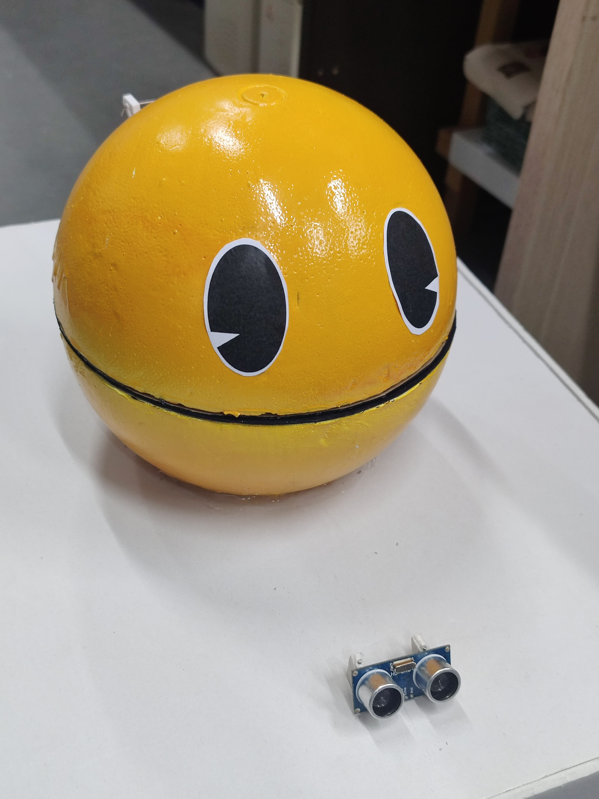
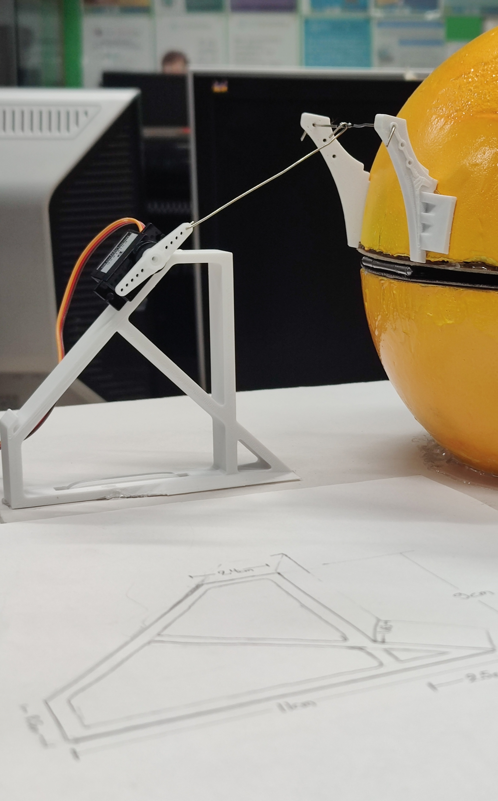
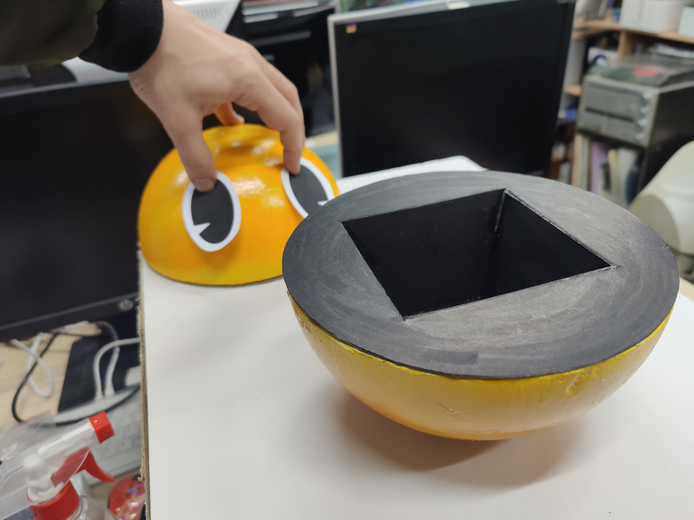
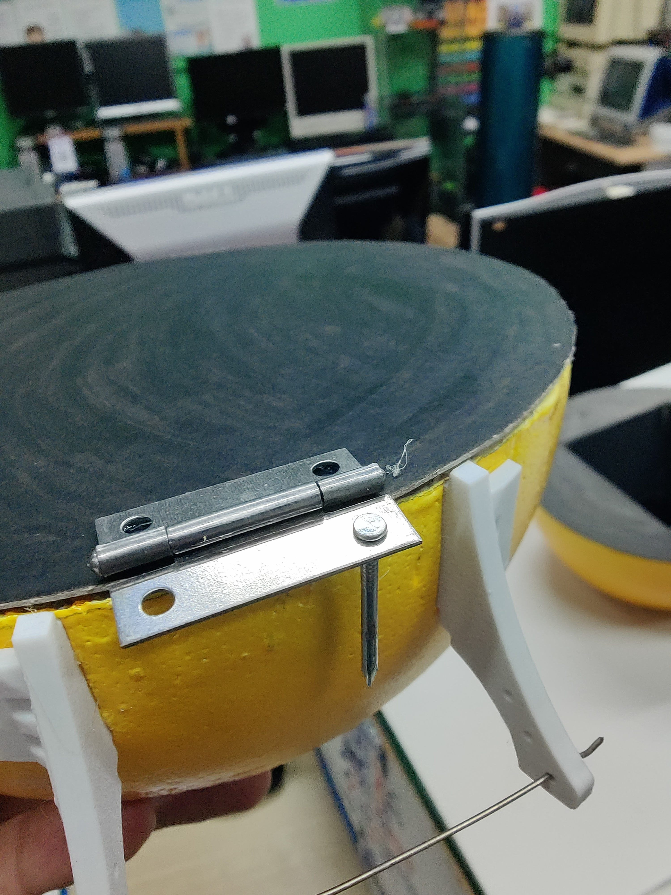
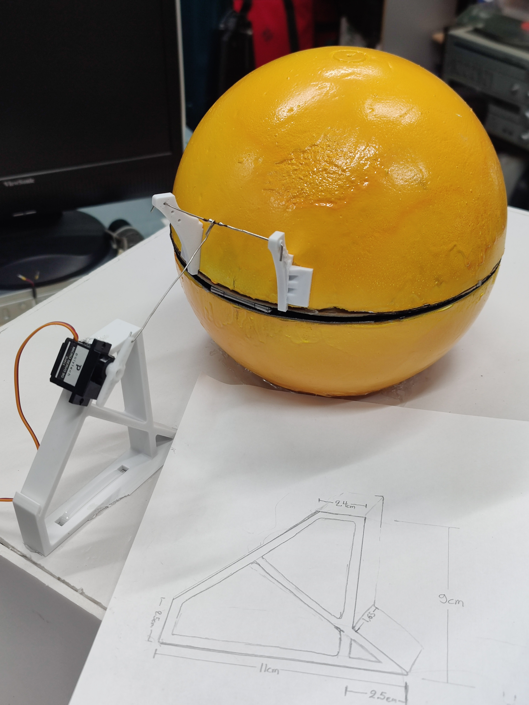

11. Pacman Piggy Bank
Διαδραστικός κουμπαράς Pacman με Arduino Nano, αισθητήρα υπερήχων και servo motor. Όταν κάποιος πλησιάζει, το στόμα ανοίγει αυτόματα για λίγα δευτερόλεπτα και μετά κλείνει ξανά.
Περιγραφή
Το project δημιουργεί έναν χειροποίητο κουμπαρά Pacman που "ζωντανεύει" όταν ανιχνεύσει προσέγγιση. Ένας αισθητήρας υπερήχων HC-SR04 μετρά την απόσταση και, όταν εντοπίσει αντικείμενο σε απόσταση μικρότερη των 50cm, ενεργοποιεί ένα servo motor που ανοίγει το στόμα του Pacman.
Το στόμα παραμένει ανοιχτό για περίπου 2.5 δευτερόλεπτα μετά την απομάκρυνση του αντικειμένου και στη συνέχεια κλείνει. Το κεφάλι έχει κατασκευαστεί από μπάλα φελιζόλ, χαρτί χειροτεχνίας και μηχανισμό με μεντεσέ, ενώ η βάση στήριξης του servo και ο ειδικός βραχίονας ολοκληρώνουν τη μηχανική κίνηση.
Ολοκλήρωση της κατασκευής στον Σύλλογο Τεχνολογίας Θράκης.
Ομάδα Κατασκευής: Άρης Τ., Γιάννης Γ., Γιάννης Μ., Τάσος Δ.
Α. Λειτουργίες λογισμικού
- Ανίχνευση προσέγγισης με ultrasonic sensor HC-SR04
- Ενεργοποίηση σε απόσταση μικρότερη από 50cm
- Έλεγχος servo motor με τη βιβλιοθήκη
Servo.h - Άνοιγμα στόματος στις 170° και κλείσιμο στις 10°
- Χρονισμός με διάστημα αναμονής 2500ms και μετρήσεις κάθε 400ms
Β. Υλικά
- 1x Arduino Nano
- 1x Ultrasonic Sensor HC-SR04
- 1x Servo Motor SG90
- Jumper wires Dupont
- Τροφοδοσία μέσω USB ή εξωτερική πηγή 5V
- 1x μπάλα φελιζόλ, περίπου 20cm διάμετρο
- 2x φύλλα χοντρό χαρτί craft A4 για το εσωτερικό του στόματος
- 1x μικρός μεταλλικός μεντεσές, καρφάκια, συνδετήρες, κόλλα χειροτεχνίας και θερμόκολλα
Γ. Συνδεσμολογία
- HC-SR04 VCC → 5V
- HC-SR04 GND → GND
- HC-SR04 TRIG → D9
- HC-SR04 ECHO → D10
- Servo Signal → D6
- Servo VCC → 5V
- Servo GND → GND
Δ. Οδηγίες χρήσης
- Πραγματοποιήστε τη συνδεσμολογία σύμφωνα με τα pins του project.
- Ανοίξτε το sketch του project στο Arduino IDE.
- Επιλέξτε board Arduino Nano με processor ATmega328P.
- Κάντε upload τον κώδικα και ανοίξτε το Serial Monitor στα 9600 baud για να δείτε τις μετρήσεις απόστασης.
- Ρυθμίστε μηχανικά τη θέση του servo ώστε το στόμα να ανοίγει και να κλείνει χωρίς να ζορίζεται.
Ε. Printables και μηχανική ρύθμιση
Στον φάκελο print υπάρχουν τα αρχεία για το control horn, τη βάση στήριξης του SG90 και τα μάτια
του Pacman. Ο μηχανισμός χρειάζεται δοκιμή πριν τη μόνιμη στερέωση, ώστε το servo να καλύπτει σωστά όλο
το εύρος κίνησης.
Προσοχή στα υλικά: το φελιζόλ δεν πρέπει να βαφτεί απευθείας με spray και δεν πρέπει να χρησιμοποιηθεί ισχυρή κόλλα στιγμής, γιατί οι διαλύτες μπορούν να καταστρέψουν την επιφάνειά του.
ΣΤ. Εκπαιδευτική αξία
Η κατασκευή συνδυάζει physical computing και μηχανική. Οι μαθητές γνωρίζουν τη μέτρηση απόστασης με υπερήχους, τον έλεγχο servo με PWM, τη χρήση χρονισμών στον κώδικα και τη μετατροπή περιστροφικής κίνησης σε κίνηση μοχλού για το άνοιγμα του στόματος.
Φωτογραφίες




